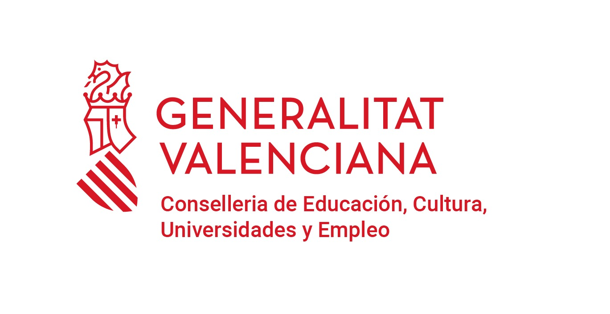

| Home | Organización | Programa | Registro |
En un mundo donde la población envejece rápidamente, la Inteligencia Artificial (IA) ofrece soluciones innovadoras para mejorar la calidad de vida de las personas mayores. Este workshop, diseñado para profesionales de la tecnología, la salud, y el cuidado geriátrico, explorará cómo aplicar herramientas de IA para enfrentar los desafíos del envejecimiento y promover el bienestar integral.
Durante el evento, los participantes aprenderán a utilizar tecnologías avanzadas, como análisis de datos, asistentes virtuales, y sistemas de monitoreo inteligente, para abordar necesidades clave de la población mayor, incluyendo la gestión de enfermedades crónicas, el acompañamiento emocional, y la promoción de una vida activa e independiente. El workshop combina sesiones teórico-prácticas presentadas por investigadores y profesionales en la aplicación de la IA a la salud. Al final del taller, los asistentes habrán adquirido conocimientos y habilidades para desarrollar e implementar soluciones tecnológicas que impacten positivamente en la vida de los mayores, mientras se fomenta una sociedad más inclusiva y equitativa.
Enlace Streaming: https://si.ua.es/es/videostreaming/politecnica.html
Sala de grados Escuela Politécnica Superior de la Universidad de Alicante
En el marco del proyecto de grupo consolidado de la GVA “AICO “Arquitecturas inteligentes para el análisis del comportamiento y de la evolución morfológica del cuerpo: aplicaciones en Salud incorporando la perspectiva de género (AI4Health).” CIAICO/2022/132” celebramos el siguiente evento.
